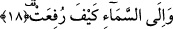
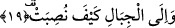
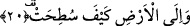

gibilere çok iş düşecek, zira bu yüksek tahtın üzerine çıkmak için epey zahmet
çekmeleri, oradan aşağı inmeleri için de imkânlara sâhip olmaları gerekir. Bunun
üzerine “efelâ yenzuru…” âyeti geldi. Yani deve bütün yüksekliği ve büyüklüğüne
rağmen bir çocuğun ipine musahhardır, çocuk deveye kolayca biner sonra da iner.
Cennetin tahtlarına neden şaşırıyorsunuz? Onlar da Cennet ehlinin emrindedirler.
18. Göğün nasıl yükseltildiğine,
Gece gündüz her an karşılarında gördükleri “göğün nasıl yükseltildiğine” bakmazlar
mı? Göğün direksiz ve dayanaksız olarak insanın aklının erişemeyeceği ve
kavrayamayacağı bir biçimde bunca derin bir şekilde nasıl yaratıldığına bir bakmazlar
mı?
19. Dağların nasıl dikildiğine,
Eteklerinde konakladıkları sularından ve ağaçlarından yararlandıkları “dağların
nasıl” sapasağlam “dikildiğine” bakmazlar mı? Bu dağlar yere sapasağlam çakılmış,
yerlerinden kaymadıkları gibi yok da olmazlar.
Ebu’l-Leys Semerkandi şöyle diyor: Onlar dağların yeryüzüne birer kazıkçasına
nasıl çakıldıklarına bir bakmazlar mı?
Bu âyet-i kerimede misal âlemine işâret vardır. Çünkü misal âlemi rûhâniyât göğü ile
cismâniyât arzı arasında dünyada görmüş olduğumuz dağlar gibidirler.
20. Yeryüzünün nasıl yayıldığına bir bakmazlar mı?
Yani üzerinde yürüdükleri ve gezip tozdukları yerkürenin nasıl yayıldığına ve suyun
üzerinde nasıl serildiğine bir bakmazlar mı? Yerkürenin üzerinde yaşayan canlıların
menfaatlerine uygun olarak nasıl sonuçlandırıldığına bir bakmazlar mı? Yeryüzünün
küre şeklinde değil de düz olduğu anlamını çıkaranlara şu şekilde cevap verilmiştir.
Herhangi bir küre son derece büyük olduğunda bunun her bir parçası düz bir satıh gibi
algılanır. Dolayısıyla böylesine düz görülen bir yere yayılma fiili kullanılması bu
açıdan doğru olur. Küreden küreye fark vardır. Güvercin yumurtasıyla, deve kuşu
yumurtası arasında fark olduğu gibi.
Bütün bu açıklamalardan sonra âyet-i kerimeye mânâ verecek olursak şöyle deriz: